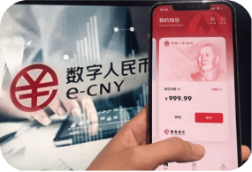

현금 없는 사회
모바일 결제 서비스는 중국 대도시를 중심으로 빠르게 상용화되고
있습니다.
중국에서는 물건 구입뿐만 아니라 공과금 납부, 택시 요금 지불, 축의금이나
세뱃돈 등 대부분의 금전 거래에서 모바일 결제를 활용합니다.
중국에서는 물건 구입뿐만 아니라 공과금 납부, 택시 요금 지불, 축의금이나
세뱃돈 등 대부분의 금전 거래에서 모바일 결제를 활용합니다.

디지털 위안화(e-CNY)는 중국 중앙은행이 발행
하는 법정 화폐로, 은행 계좌 없이 모바일 기기로
이용할 수 있으며 NFC(근거리 무선 통신) 방식으로
오프라인 결제도 가능합니다.
하는 법정 화폐로, 은행 계좌 없이 모바일 기기로
이용할 수 있으며 NFC(근거리 무선 통신) 방식으로
오프라인 결제도 가능합니다.